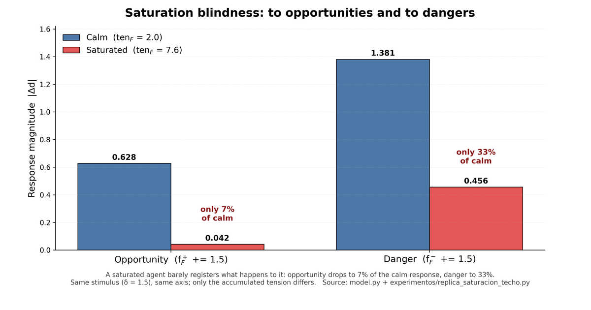

G-EMV: A Geometric Architecture of Homeostatic Orientation for Agents
This work proposes G-EMV, a geometric architecture of homeostatic orientation in which this criterion of relevance emerges from the structure of the agent itself, without being specified from outside.

Paper one of three.